CODING AGENTS AS PIXEL WORLD MODELS
traex/DeepSeek-V4.1-Flash · 0194
点击播放 · 原生 RGB 像素
逐轮保存的候选
回放视频、检查图与代码变化。
每份候选均可单独播放。实际图片检查记录在下方工具轨迹中。
候选 01播放与检查图
点击播放 · 原生 RGB 像素

展开代码变化
--- 上一保存版本
+++ 本次保存版本
@@ -0,0 +1,316 @@
+from pathlib import Path
+
+import cv2
+import numpy as np
+from PIL import Image
+
+import artifact_io
+
+
+ROOT = Path(__file__).resolve().parent
+WIDTH = 256
+HEIGHT = 144
+FRAMES = 20
+FPS = 4
+
+
+def _kettle_mask(image: np.ndarray) -> np.ndarray:
+ """Extract the kettlebell silhouette, preserving the opening in its handle."""
+ outer = np.array(
+ [
+ [94, 0], [102, 0], [103, 14], [112, 16], [120, 22],
+ [124, 32], [126, 46], [125, 55], [119, 63], [111, 68],
+ [100, 70], [88, 69], [77, 64], [70, 57], [66, 48],
+ [67, 37], [71, 27], [78, 19], [86, 15], [94, 14],
+ ],
+ np.int32,
+ )
+ hole = np.array(
+ [
+ [92, 19], [104, 19], [109, 24], [112, 31], [112, 38],
+ [108, 43], [100, 45], [92, 43], [87, 38], [87, 30], [89, 23],
+ ],
+ np.int32,
+ )
+
+ labels = np.full((HEIGHT, WIDTH), cv2.GC_BGD, np.uint8)
+ cv2.fillPoly(labels, [outer], cv2.GC_PR_FGD)
+ cv2.fillPoly(labels, [hole], cv2.GC_PR_BGD)
+ bg_model = np.zeros((1, 65), np.float64)
+ fg_model = np.zeros((1, 65), np.float64)
+ cv2.grabCut(
+ image, labels, None, bg_model, fg_model, 8, cv2.GC_INIT_WITH_MASK
+ )
+
+ mask = np.where(
+ (labels == cv2.GC_FGD) | (labels == cv2.GC_PR_FGD), 255, 0
+ ).astype(np.uint8)
+ allowed = np.zeros_like(mask)
+ cv2.fillPoly(allowed, [outer], 255)
+ mask = cv2.bitwise_and(mask, allowed)
+ return cv2.morphologyEx(mask, cv2.MORPH_CLOSE, np.ones((3, 3), np.uint8))
+
+
+def _paper_mask(image: np.ndarray) -> np.ndarray:
+ """Extract the green sheet and its small dark suspension clip."""
+ rgb = cv2.cvtColor(image, cv2.COLOR_BGR2RGB)
+ green_excess = (
+ rgb[:, :, 1].astype(np.int16)
+ - np.maximum(rgb[:, :, 0], rgb[:, :, 2]).astype(np.int16)
+ )
+ green = np.where(green_excess > 12, 255, 0).astype(np.uint8)
+
+ sheet_roi = np.zeros((HEIGHT, WIDTH), np.uint8)
+ cv2.fillPoly(
+ sheet_roi,
+ [np.array([[164, 22], [207, 22], [207, 67], [164, 67]], np.int32)],
+ 255,
+ )
+ green = cv2.bitwise_and(green, sheet_roi)
+
+ clip_roi = np.zeros((HEIGHT, WIDTH), np.uint8)
+ cv2.fillPoly(
+ clip_roi,
+ [np.array([[176, 0], [192, 0], [192, 25], [176, 25]], np.int32)],
+ 255,
+ )
+ gray = cv2.cvtColor(image, cv2.COLOR_BGR2GRAY)
+ blue_clip = (
+ (rgb[:, :, 2].astype(np.int16) > rgb[:, :, 0].astype(np.int16) + 12)
+ & (rgb[:, :, 2].astype(np.int16) > rgb[:, :, 1].astype(np.int16) + 4)
+ )
+ clip = np.where((gray < 95) | blue_clip, 255, 0).astype(np.uint8)
+ clip = cv2.bitwise_and(clip, clip_roi)
+
+ mask = cv2.bitwise_or(green, clip)
+ return cv2.morphologyEx(mask, cv2.MORPH_CLOSE, np.ones((3, 3), np.uint8))
+
+
+def _make_clean_plate(image: np.ndarray, masks: list[np.ndarray]) -> np.ndarray:
+ union = np.zeros((HEIGHT, WIDTH), np.uint8)
+ for mask in masks:
+ union = cv2.bitwise_or(union, mask)
+ union = cv2.dilate(union, np.ones((3, 3), np.uint8), iterations=1)
+
+ clean = cv2.inpaint(image, union, 8, cv2.INPAINT_TELEA)
+ # A restrained local median pass removes thin silhouette residue without
+ # flattening the pillow folds across the rest of the frame.
+ softened = cv2.medianBlur(clean, 5)
+ alpha = cv2.GaussianBlur(union, (7, 7), 0).astype(np.float32) / 255.0
+ alpha = alpha[:, :, None] * 0.42
+ return np.clip(clean * (1.0 - alpha) + softened * alpha, 0, 255).astype(np.uint8)
+
+
+def _deform_pillow(
+ image: np.ndarray,
+ cx: float,
+ surface_y: float,
+ depth: float,
+ sigma_x: float,
+ sigma_y: float,
+ roi: tuple[int, int, int, int],
+) -> np.ndarray:
+ if depth < 0.02:
+ return image.copy()
+
+ x0, y0, x1, y1 = roi
+ yy, xx = np.mgrid[y0:y1, x0:x1].astype(np.float32)
+ x_falloff = np.exp(-0.5 * ((xx - cx) / sigma_x) ** 2)
+ y_falloff = np.exp(-0.5 * ((yy - surface_y) / sigma_y) ** 2)
+ # Preserve the table edge and lower pillow body while lowering the top.
+ lower_fade = np.clip((y1 - yy) / max(1.0, y1 - surface_y), 0.0, 1.0)
+ displacement = depth * x_falloff * y_falloff * lower_fade
+
+ map_x = np.arange(x0, x1, dtype=np.float32)[None, :].repeat(y1 - y0, axis=0)
+ map_y = yy - displacement
+ out = image.copy()
+ warped = cv2.remap(
+ image,
+ map_x,
+ map_y,
+ interpolation=cv2.INTER_LINEAR,
+ borderMode=cv2.BORDER_REFLECT_101,
+ )
+ out[y0:y1, x0:x1] = warped
+ return out
+
+
+def _soft_ellipse(
+ cx: float,
+ cy: float,
+ rx: float,
+ ry: float,
+ angle: float = 0.0,
+) -> np.ndarray:
+ yy, xx = np.mgrid[0:HEIGHT, 0:WIDTH].astype(np.float32)
+ ca = np.cos(np.deg2rad(angle))
+ sa = np.sin(np.deg2rad(angle))
+ dx = xx - cx
+ dy = yy - cy
+ xr = ca * dx + sa * dy
+ yr = -sa * dx + ca * dy
+ radius2 = (xr / max(rx, 0.5)) ** 2 + (yr / max(ry, 0.5)) ** 2
+ return np.exp(-0.5 * radius2)
+
+
+def _add_pillow_shading(
+ image: np.ndarray,
+ cx: float,
+ surface_y: float,
+ strength: float,
+ width: float,
+) -> np.ndarray:
+ out = image.astype(np.float32)
+ contact = _soft_ellipse(cx, surface_y + 3.0, width, 5.5)
+ out *= (1.0 - strength * contact[:, :, None])
+
+ # The compressed sides catch a little more light from the room.
+ left = _soft_ellipse(cx - width * 0.72, surface_y + 5.0, 9.0, 10.0)
+ right = _soft_ellipse(cx + width * 0.72, surface_y + 5.0, 9.0, 10.0)
+ highlight = np.clip(left + right, 0.0, 1.0)
+ out += highlight[:, :, None] * (4.5 * strength)
+ return np.clip(out, 0, 255).astype(np.uint8)
+
+
+def _paper_affine(angle: float, dy: float) -> np.ndarray:
+ center = (185.5, 52.0)
+ rotation = cv2.getRotationMatrix2D(center, angle, 1.0)
+ rotation[:, 2] += (0.0, dy)
+ return rotation
+
+
+def _warp_layer(
+ image: np.ndarray, alpha: np.ndarray, matrix: np.ndarray
+) -> tuple[np.ndarray, np.ndarray]:
+ warped = cv2.warpAffine(
+ image,
+ matrix,
+ (WIDTH, HEIGHT),
+ flags=cv2.INTER_LINEAR,
+ borderMode=cv2.BORDER_CONSTANT,
+ borderValue=(0, 0, 0),
+ )
+ warped_alpha = cv2.warpAffine(
+ alpha,
+ matrix,
+ (WIDTH, HEIGHT),
+ flags=cv2.INTER_LINEAR,
+ borderMode=cv2.BORDER_CONSTANT,
+ borderValue=0,
+ )
+ return warped, warped_alpha
+
+
+def _composite(base: np.ndarray, layer: np.ndarray, alpha: np.ndarray) -> np.ndarray:
+ a = alpha.astype(np.float32)[:, :, None] / 255.0
+ result = base.astype(np.float32) * (1.0 - a) + layer.astype(np.float32) * a
+ return np.clip(result, 0, 255).astype(np.uint8)
+
+
+def _kettle_track(frame: int) -> tuple[float, float]:
+ if frame <= 0:
+ return 0.0, 0.0
+ t = frame / FPS
+ if t < 1.0:
+ u = min(t, 1.0)
+ dy = 8.0 * u * u
+ return dy, 0.0
+ if frame == 4:
+ return 8.0, 6.0
+ if frame == 5:
+ return 7.3, 3.4
+ if frame == 6:
+ return 7.8, 5.6
+ if frame == 7:
+ return 7.65, 4.9
+ return 7.72, 5.2
+
+
+def _paper_track(frame: int) -> tuple[float, float, float]:
+ if frame <= 0:
+ return 0.0, 0.0, 0.0
+ t = frame / FPS
+ if t < 1.25:
+ u = min(t / 1.25, 1.0)
+ dy = 7.0 * u * u
+ sway = 1.1 * np.sin(np.pi * u) - 0.35 * np.sin(2.0 * np.pi * u)
+ return dy, sway, 0.35 * np.sin(np.pi * u)
+ if frame == 5:
+ return 7.0, 1.1, 1.7
+ if frame == 6:
+ return 6.55, 0.7, 0.7
+ if frame == 7:
+ return 6.78, 0.8, 1.15
+ return 6.72, 0.75, 1.0
+
+
+def generate() -> np.ndarray:
+ original = np.array(Image.open(ROOT / "first_frame.png").convert("RGB"))
+ bgr = cv2.cvtColor(original, cv2.COLOR_RGB2BGR)
+
+ kettle = _kettle_mask(bgr)
+ paper = _paper_mask(bgr)
+ clean = _make_clean_plate(bgr, [kettle, paper])
+
+ kettle_alpha = cv2.GaussianBlur(kettle, (3, 3), 0.62)
+ paper_alpha = cv2.GaussianBlur(paper, (3, 3), 0.55)
+ paper_alpha = np.maximum(paper_alpha, paper)
+
+ frames = np.empty((FRAMES, HEIGHT, WIDTH, 3), np.uint8)
+ frames[0] = original
+
+ for frame in range(1, FRAMES):
+ kettle_dy, kettle_depth = _kettle_track(frame)
+ paper_dy, paper_dx, paper_angle = _paper_track(frame)
+
+ base = clean.copy()
+ base = _deform_pillow(
+ base,
+ cx=97.5,
+ surface_y=67.0,
+ depth=kettle_depth,
+ sigma_x=28.0,
+ sigma_y=10.0,
+ roi=(42, 49, 145, 108),
+ )
+ paper_depth = 1.25 * min(paper_dy / 7.0, 1.0)
+ base = _deform_pillow(
+ base,
+ cx=186.0,
+ surface_y=63.0,
+ depth=paper_depth,
+ sigma_x=26.0,
+ sigma_y=9.0,
+ roi=(145, 48, 229, 104),
+ )
+ base = _add_pillow_shading(
+ base, 97.5, 67.0 + kettle_dy * 0.58, 0.26 * kettle_depth / 6.0, 34.0
+ )
+ base = _add_pillow_shading(
+ base, 186.0, 63.0 + paper_dy * 0.55, 0.075, 27.0
+ )
+
+ kettle_matrix = np.array(
+ [[1.0, 0.0, 0.0], [0.0, 1.0, kettle_dy]], np.float32
+ )
+ kettle_layer, kettle_mask = _warp_layer(
+ bgr, kettle_alpha, kettle_matrix
+ )
+ base = _composite(base, kettle_layer, kettle_mask)
+
+ paper_matrix = _paper_affine(paper_angle, paper_dy)
+ paper_matrix[:, 2] += (paper_dx, 0.0)
+ paper_layer, paper_mask = _warp_layer(
+ bgr, paper_alpha, paper_matrix
+ )
+ base = _composite(base, paper_layer, paper_mask)
+
+ frames[frame] = cv2.cvtColor(base, cv2.COLOR_BGR2RGB)
+
+ assert np.array_equal(frames[0], original)
+ return frames
+
+
+if __name__ == "__main__":
+ video_frames = generate()
+ artifact_io.save(video_frames, ROOT)
候选 02播放与检查图
点击播放 · 原生 RGB 像素

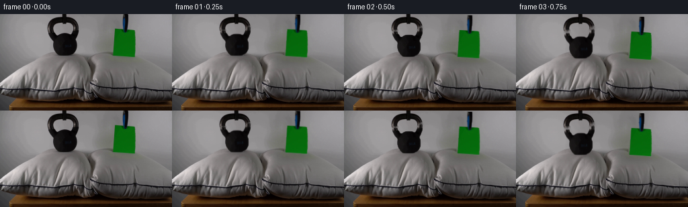
展开代码变化
--- 上一保存版本
+++ 本次保存版本
@@ -230,18 +230,20 @@
if frame <= 0:
return 0.0, 0.0, 0.0
t = frame / FPS
- if t < 1.25:
- u = min(t / 1.25, 1.0)
- dy = 7.0 * u * u
- sway = 1.1 * np.sin(np.pi * u) - 0.35 * np.sin(2.0 * np.pi * u)
+ if t < 1.0:
+ u = min(t, 1.0)
+ dy = 7.2 * u * u
+ sway = 0.65 * np.sin(np.pi * u)
return dy, sway, 0.35 * np.sin(np.pi * u)
+ if frame == 4:
+ return 7.2, 0.1, 0.55
if frame == 5:
- return 7.0, 1.1, 1.7
+ return 7.0, 0.25, 1.55
if frame == 6:
- return 6.55, 0.7, 0.7
+ return 7.12, 0.18, 0.78
if frame == 7:
- return 6.78, 0.8, 1.15
- return 6.72, 0.75, 1.0
+ return 7.06, 0.22, 1.08
+ return 7.08, 0.21, 1.0
def generate() -> np.ndarray:
可观测工具轨迹
实际执行的命令与返回图片。
命令 1exit 0
/bin/bash -c "pwd && rg --files -g '"'!*.png'"' -g '"'!*.mp4'"' -g '"'!*.webm'"' -g '"'!*.gif'"'"
命令 2exit 0
/bin/bash -c "sed -n '1,240p' prompt.txt"
命令 3exit 0
/bin/bash -c "sed -n '1,280p' GENERATION_RULES.md"
命令 4exit 0
/bin/bash -c "find . -maxdepth 2 -type f -printf '%p %s bytes\\n' | sort"
命令 5exit 0
/bin/bash -c "sed -n '1,260p' artifact_io.py"
命令 6exit 127
/bin/bash -c "file first_frame.png && identify -verbose first_frame.png | sed -n '1,100p'"
命令 7exit 0
/bin/bash -c "sed -n '1,240p' player_template.html"
命令 8exit 0
/bin/bash -c "python - <<'PY' import importlib.util for m in ['cv2','scipy','PIL','numpy','imageio','matplotlib']: print(m, bool(importlib.util.find_spec(m))) PY"
命令 9exit 0
/bin/bash -c "python - <<'PY'
from PIL import Image
im=Image.open('first_frame.png')
im.resize((1024,576),Image.Resampling.NEAREST).save('.tmp/first_frame_4x.png')
for name,box in {'left':(45,0,165,100),'right':(150,0,235,90),'pillows':(0,45,256,140),'top':(0,0,256,80)}.items():
im.crop(box).resize(((box[2]-box[0])*6,(box[3]-box[1])*6),Image.Resampling.NEAREST).save(f'.tmp/{name}_6x.png')
print(im.mode, im.size)
PY"命令 10exit 0
/bin/bash -c "python - <<'PY'
from PIL import Image
import numpy as np
im=np.array(Image.open('first_frame.png'))
# Print coarse color/luma grid and inspect rows around objects
for y in [20,30,40,50,55,60,65,70,75,80,90,100,110,120,130,138]:
print(y, [tuple(im[y,x]) for x in [0,40,70,90,105,120,135,150,170,185,200,220,250]])
PY"命令 11exit 1
/bin/bash -c "python - <<'PY'
import cv2, numpy as np
from PIL import Image
im=cv2.imread('first_frame.png')
rgb=cv2.cvtColor(im,cv2.COLOR_BGR2RGB)
g=cv2.cvtColor(im,cv2.COLOR_BGR2GRAY)
# object masks
k=np.zeros(g.shape,np.uint8)
roi=(slice(0,72),slice(58,136))
# dark threshold and rough region component
th=((g<112).astype(np.uint8)*255)
# fill handle/body with polygons
poly=np.array([[94,0],[102,0],[103,15],[108,16],[115,19],[121,27],[124,38],[126,50],[122,60],[114,67],[103,70],[87,70],[76,65],[69,57],[66,48],[67,37],[71,26],[79,18],[86,15],[94,14]],np.int32)
rough=np.zeros_like(g); cv2.fillPoly(rough,[poly],255)
# include dark pixels inside ROI and within rough expanded
m=cv2.bitwise_and(th,rough)
# largest connected + fill
num,lab,stats,cents=cv2.connectedComponentsWithStats(m)
# include all components near center; fill rough contour holes via flood fill
# just combine rough with threshold; silhouette should be rough minus hole? fill rough then mask out background using threshold?
# alpha based on color vs background: use rough and dark threshold expanded
m2=cv2.bitwise_or(rough, th)
m2[:0]=0
# Keep rough only for object; within rough alpha where dark, fill interior dark
kmask=rough.copy()
# mask is silhouette, but exact rough outer enough.
# paper mask
green=((rgb[:,:,1].astype(int)>rgb[:,:,0].astype(int)+18)&(rgb[:,:,1].astype(int)>rgb[:,:,2].astype(int)+18)).astype(np.uint8)*255
paper=np.zeros_like(g)
prough=np.array([[166,24],[205,23],[205,65],[167,65]],np.int32); cv2.fillPoly(paper,[prough],255)
pm=cv2.bitwise_and(paper,green)
# include dark clip/string above
clip=np.zeros_like(g); cv2.fillPoly(clip,[np.array([[177,0],[190,0],[191,24],[177,25]],np.int32)],255)
darkclip=((g<85).astype(np.uint8)*255)
pm=cv2.bitwise_or(pm,cv2.bitwise_and(clip,darkclip))
pm=cv2.bitwise_or(pm,cv2.bitwise_and(clip,(rgb[:,:,2].astype(int)>rgb[:,:,0].astype(int)+12)))
pm=cv2.morphologyEx(pm,cv2.MORPH_CLOSE,np.ones((3,3),np.uint8))
# combined inpaint
mask=cv2.bitwise_or(kmask,pm)
mask=cv2.dilate(mask,np.ones((3,3),np.uint8),iterations=1)
clean=cv2.inpaint(im,mask,4,cv2.INPAINT_TELEA)
cv2.imwrite('.tmp/masks.png',mask)
cv2.imwrite('.tmp/clean.png',clean)
cv2.imwrite('.tmp/kettle_mask.png',kmask)
cv2.imwrite('.tmp/paper_mask.png',pm)
PY"命令 12exit 0
/bin/bash -c "python - <<'PY'
import cv2, numpy as np
im=cv2.imread('first_frame.png')
rgb=cv2.cvtColor(im,cv2.COLOR_BGR2RGB)
g=cv2.cvtColor(im,cv2.COLOR_BGR2GRAY)
poly=np.array([[94,0],[102,0],[103,15],[108,16],[115,19],[121,27],[124,38],[126,50],[122,60],[114,67],[103,70],[87,70],[76,65],[69,57],[66,48],[67,37],[71,26],[79,18],[86,15],[94,14]],np.int32)
kmask=np.zeros_like(g); cv2.fillPoly(kmask,[poly],255)
green=((rgb[:,:,1].astype(int)>rgb[:,:,0].astype(int)+18)&(rgb[:,:,1].astype(int)>rgb[:,:,2].astype(int)+18)).astype(np.uint8)*255
paper=np.zeros_like(g)
prough=np.array([[166,24],[205,23],[205,65],[167,65]],np.int32); cv2.fillPoly(paper,[prough],255)
pm=cv2.bitwise_and(paper,green)
clip=np.zeros_like(g); cv2.fillPoly(clip,[np.array([[177,0],[190,0],[191,24],[177,25]],np.int32)],255)
darkclip=((g<85).astype(np.uint8)*255)
pm=cv2.bitwise_or(pm,cv2.bitwise_and(clip,darkclip))
bluemask=((rgb[:,:,2].astype(int)>rgb[:,:,0].astype(int)+12)&(rgb[:,:,2].astype(int)>rgb[:,:,1].astype(int)+5)).astype(np.uint8)*255
pm=cv2.bitwise_or(pm,cv2.bitwise_and(clip,bluemask))
pm=cv2.morphologyEx(pm,cv2.MORPH_CLOSE,np.ones((3,3),np.uint8))
mask=cv2.bitwise_or(kmask,pm)
mask=cv2.dilate(mask,np.ones((3,3),np.uint8),iterations=1)
clean=cv2.inpaint(im,mask,4,cv2.INPAINT_TELEA)
cv2.imwrite('.tmp/masks.png',mask)
cv2.imwrite('.tmp/clean.png',clean)
cv2.imwrite('.tmp/kettle_mask.png',kmask)
cv2.imwrite('.tmp/paper_mask.png',pm)
PY"命令 13exit 0
/bin/bash -c "python - <<'PY'
import cv2,numpy as np
im=cv2.imread('first_frame.png')
mask=np.zeros(im.shape[:2],np.uint8)
# rough outer rect includes object, background inside handle. grabcut polygon seed
poly=np.array([[94,0],[102,0],[103,14],[112,16],[120,22],[124,32],[126,46],[125,55],[119,63],[111,68],[100,70],[88,69],[77,64],[70,57],[66,48],[67,37],[71,27],[78,19],[86,15],[94,14]],np.int32)
bgd=np.zeros((1,65),np.float64);fgd=np.zeros((1,65),np.float64)
# mark outer as probable fg and inner hole as probable bg, unknown else
m=np.full(im.shape[:2],cv2.GC_BGD,np.uint8)
cv2.fillPoly(m,[poly],cv2.GC_PR_FGD)
cv2.fillPoly(m,[np.array([[92,19],[104,19],[109,24],[112,31],[112,38],[108,43],[100,45],[92,43],[87,38],[87,30],[89,23]],np.int32)],cv2.GC_PR_BGD)
cv2.grabCut(im,m,None,bgd,fgd,8,cv2.GC_INIT_WITH_MASK)
a=np.where((m==cv2.GC_FGD)|(m==cv2.GC_PR_FGD),255,0).astype(np.uint8)
a=cv2.morphologyEx(a,cv2.MORPH_CLOSE,np.ones((3,3),np.uint8))
# remove outside rough
outer=np.zeros_like(a);cv2.fillPoly(outer,[poly],255);a=cv2.bitwise_and(a,outer)
cv2.imwrite('.tmp/kettle_grab.png',a)
vis=im.copy();vis[a==0]=(vis[a==0]*.3+np.array([255,0,255])*.7).astype(np.uint8);cv2.imwrite('.tmp/kettle_grab_vis.png',vis)
PY"命令 14exit 0
/bin/bash -c "python - <<'PY'
from PIL import Image
for name in ['clean','masks','kettle_grab','paper_mask']:
im=Image.open(f'.tmp/{name}.png')
im.resize((1024,576),Image.Resampling.NEAREST).save(f'.tmp/{name}_4x.png')
PY"命令 15exit 0
/bin/bash -c "python - <<'PY'
import cv2, numpy as np
im=cv2.imread('first_frame.png')
# build object masks with GrabCut
kg=np.zeros(im.shape[:2],np.uint8)
poly=np.array([[94,0],[102,0],[103,14],[112,16],[120,22],[124,32],[126,46],[125,55],[119,63],[111,68],[100,70],[88,69],[77,64],[70,57],[66,48],[67,37],[71,27],[78,19],[86,15],[94,14]],np.int32)
m=np.full(im.shape[:2],cv2.GC_BGD,np.uint8);cv2.fillPoly(m,[poly],cv2.GC_PR_FGD)
cv2.fillPoly(m,[np.array([[92,19],[104,19],[109,24],[112,31],[112,38],[108,43],[100,45],[92,43],[87,38],[87,30],[89,23]],np.int32)],cv2.GC_PR_BGD)
cv2.grabCut(im,m,None,np.zeros((1,65),np.float64),np.zeros((1,65),np.float64),8,cv2.GC_INIT_WITH_MASK)
kg=np.where((m==cv2.GC_FGD)|(m==cv2.GC_PR_FGD),255,0).astype(np.uint8)
outer=np.zeros_like(kg);cv2.fillPoly(outer,[poly],255);kg=cv2.bitwise_and(kg,outer)
# paper exact-ish mask including clipped edges
rgb=cv2.cvtColor(im,cv2.COLOR_BGR2RGB);g=cv2.cvtColor(im,cv2.COLOR_BGR2GRAY)
pg=((rgb[:,:,1].astype(int)>rgb[:,:,0].astype(int)+16)&(rgb[:,:,1].astype(int)>rgb[:,:,2].astype(int)+16)).astype(np.uint8)*255
paper_roi=np.zeros_like(pg);cv2.fillPoly(paper_roi,[np.array([[164,23],[207,23],[207,66],[165,66]],np.int32)],255)
pg=cv2.bitwise_and(pg,paper_roi)
# close then retain green core; add clip
pg=cv2.morphologyEx(pg,cv2.MORPH_CLOSE,np.ones((3,3),np.uint8))
clip_roi=np.zeros_like(pg);cv2.fillPoly(clip_roi,[np.array([[176,0],[192,0],[192,25],[176,25]],np.int32)],255)
clip=((g<90)|((rgb[:,:,2].astype(int)>rgb[:,:,0].astype(int)+15)&(rgb[:,:,2].astype(int)>rgb[:,:,1].astype(int)+4))).astype(np.uint8)*255
clip=cv2.bitwise_and(clip,clip_roi)
pg=cv2.bitwise_or(pg,clip)
pg=cv2.morphologyEx(pg,cv2.MORPH_CLOSE,np.ones((3,3),np.uint8))
# inpaint union with larger radius
mask=cv2.bitwise_or(kg,pg)
mask=cv2.dilate(mask,np.ones((3,3),np.uint8),iterations=1)
clean=cv2.inpaint(im,mask,7,cv2.INPAINT_TELEA)
# smooth only masked region with median-ish blur to hide lines
blur=cv2.GaussianBlur(clean,(5,5),0)
alpha=(cv2.GaussianBlur(mask,(7,7),0).astype(np.float32)/255.)[:,:,None]
clean=(clean*(1-alpha*.35)+blur*(alpha*.35)).astype(np.uint8)
cv2.imwrite('.tmp/clean2.png',clean)
cv2.imwrite('.tmp/kg.png',kg);cv2.imwrite('.tmp/pg.png',pg);cv2.imwrite('.tmp/mask2.png',mask)
PY"命令 16exit 0
/bin/bash -c "python - <<'PY'
from PIL import Image
im=Image.open('.tmp/clean2.png'); im.resize((1024,576),Image.Resampling.NEAREST).save('.tmp/clean2_4x.png')
PY"命令 17exit 0
/bin/bash -c "python - <<'PY'
from PIL import Image
for name in ['kg','pg','mask2']:
im=Image.open(f'.tmp/{name}.png'); im.resize((1024,576),Image.Resampling.NEAREST).save(f'.tmp/{name}_4x.png')
PY"命令 18exit 0
/bin/bash -c "python - <<'PY'
from PIL import Image
import numpy as np
im=np.array(Image.open('first_frame.png'))
for y in range(20,76,4):
row=im[y]
# green runs
m=(row[:,1].astype(int)>row[:,0].astype(int)+15)&(row[:,1].astype(int)>row[:,2].astype(int)+15)
ids=np.flatnonzero(m)
print(y, (ids.min(),ids.max()) if len(ids) else None)
PY"命令 19exit 0
/bin/bash -c "python - <<'PY'
from PIL import Image
import numpy as np
im=np.array(Image.open('first_frame.png'))
for y in range(62,80):
row=im[y]
# print pixels 158:208 compact chars by green amount
s=''
for x in range(155,210):
r,g,b=row[x]
d=int(g)-max(int(r),int(b))
s += '#' if d>30 else '+' if d>12 else '.' if d>-8 else ' '
print(f'{y:3} {s}')
PY"命令 20exit 0
/bin/bash -c "python - <<'PY'
from PIL import Image
im=Image.open('first_frame.png')
# crop object regions with clean nearest large
for name,box in {'kettle':(60,0,132,74),'paper':(160,0,212,72),'leftpillow':(0,55,135,144),'rightpillow':(130,55,256,144)}.items():
im.crop(box).resize(((box[2]-box[0])*8,(box[3]-box[1])*8),Image.Resampling.NEAREST).save(f'.tmp/{name}_8x.png')
PY"命令 21exit 0
/bin/bash -c "python - <<'PY'
from PIL import Image
im=Image.open('.tmp/clean2.png')
for name,box in {'leftclean':(45,0,145,100),'rightclean':(150,0,230,100),'centerclean':(60,50,220,100)}.items():
im.crop(box).resize(((box[2]-box[0])*8,(box[3]-box[1])*8),Image.Resampling.NEAREST).save(f'.tmp/{name}_8x.png')
PY"命令 22exit 0
/bin/bash -c "python - <<'PY'
import cv2,numpy as np
im=cv2.imread('first_frame.png')
rgb=cv2.cvtColor(im,cv2.COLOR_BGR2RGB); g=cv2.cvtColor(im,cv2.COLOR_BGR2GRAY)
# object masks: broad union but exclude background by exact outer polygons
kg=np.zeros_like(g)
kp=np.array([[94,0],[102,0],[103,14],[112,16],[120,22],[124,32],[126,46],[125,55],[119,63],[111,68],[100,70],[88,69],[77,64],[70,57],[66,48],[67,37],[71,27],[78,19],[86,15],[94,14]],np.int32)
cv2.fillPoly(kg,[kp],255)
# remove handle inner hole approximately by flood-based cut region (background values > 80)
hole=np.zeros_like(g);cv2.fillPoly(hole,[np.array([[91,20],[104,20],[109,25],[111,32],[111,37],[107,42],[100,44],[93,42],[89,37],[88,31],[89,25]],np.int32)],255)
# paper region (green plus small dark strip)
pg=np.zeros_like(g)
pp=np.array([[167,23],[205,23],[205,66],[168,66]],np.int32);cv2.fillPoly(pg,[pp],255)
clip=np.zeros_like(g);cv2.fillPoly(clip,[np.array([[177,0],[191,0],[191,24],[177,24]],np.int32)],255)
# include all clip, okay dark clip only
pg=cv2.bitwise_or(pg,cv2.bitwise_and(clip,((g<100)|(rgb[:,:,2].astype(int)>rgb[:,:,0].astype(int)+12)).astype(np.uint8)*255))
# expand masks
kg=cv2.dilate(kg,np.ones((3,3),np.uint8),iterations=1)
pg=cv2.dilate(pg,np.ones((3,3),np.uint8),iterations=1)
mask=cv2.bitwise_or(kg,pg)
# inpaint, radius 9 NS then blend, then directional median
clean=cv2.inpaint(im,mask,9,cv2.INPAINT_NS)
# median blur inside mask only, 7px to erase object ghost
med=cv2.medianBlur(clean,7)
alpha=cv2.GaussianBlur(mask,(9,9),0).astype(np.float32)[:,:,None]/255.
clean=(clean*(1-alpha*.55)+med*(alpha*.55)).astype(np.uint8)
cv2.imwrite('.tmp/base_clean.png',clean)
# preview
cv2.imwrite('.tmp/base_clean_4x.png',cv2.resize(clean,None,fx=4,fy=4,interpolation=cv2.INTER_NEAREST))
PY"命令 23exit 0
/bin/bash -c "python - <<'PY'
import cv2,numpy as np
im=cv2.imread('first_frame.png'); g=cv2.cvtColor(im,cv2.COLOR_BGR2GRAY)
roi=np.zeros_like(g);roi[0:75,60:133]=255
for th in [95,105,115,125]:
m=((g<th).astype(np.uint8)*255)&roi
m=cv2.morphologyEx(m,cv2.MORPH_CLOSE,np.ones((3,3),np.uint8))
cnts,h=cv2.findContours(m,cv2.RETR_CCOMP,cv2.CHAIN_APPROX_SIMPLE)
out=np.zeros_like(g)
for i,c in enumerate(cnts):
if h[0,i,3] == -1:
cv2.drawContours(out,[c],-1,255,-1)
cv2.imwrite(f'.tmp/th{th}.png',out)
PY"命令 24exit 0
/bin/bash -c "python - <<'PY'
from PIL import Image
ims=[]
for th in [95,105,115,125]: ims.append(Image.open(f'.tmp/th{th}.png').convert('RGB').resize((1024,576),Image.Resampling.NEAREST))
out=Image.new('RGB',(1024,576*4))
for i,im in enumerate(ims):out.paste(im,(0,576*i))
out.save('.tmp/thresholds.png')
PY"命令 25exit 0
/bin/bash -c 'python generate.py'
命令 26exit 0
/bin/bash -c "python - <<'PY'
from PIL import Image
for i in [0,1,2,3,4,5,6,8,12,19]:
im=Image.open(f'frames/{i:02d}.png')
im.resize((1024,576),Image.Resampling.NEAREST).save(f'.tmp/frame_{i:02d}_4x.png')
PY"命令 27exit 0
/bin/bash -c 'python generate.py'
命令 28exit 0
/bin/bash -c "python - <<'PY'
from PIL import Image
for i in range(6):
im=Image.open(f'frames/{i:02d}.png')
im.resize((1024,576),Image.Resampling.NEAREST).save(f'.tmp/final_{i:02d}_4x.png')
PY"命令 29exit 0
/bin/bash -c "python - <<'PY'
from pathlib import Path
import numpy as np
from PIL import Image
z=np.load('pixels.npz')['pixels']
first=np.array(Image.open('first_frame.png').convert('RGB'))
print('npz', z.shape, z.dtype)
print('frame0 pixels equal:', np.array_equal(np.stack([first],0)[0], np.stack([z[:,:,0]>>16,(z[:,:,0]>>8)&255,z[:,:,0]&255],-1)[0]))
print('frames:', len(list(Path('frames').glob('*.png'))))
print('pixels.npz bytes:', Path('pixels.npz').stat().st_size)
print('index.html bytes:', Path('index.html').stat().st_size)
# Camera/static background check outside object and pillow-deformation regions.
f=np.stack([np.array(Image.open(f'frames/{i:02d}.png')) for i in range(20)])
static=f[:,0:20,:,:]
print('top-left max background delta:', int(np.abs(static.astype(int)-static[0:1].astype(int)).max()))
print('frame-to-frame mean abs delta:', [round(float(np.abs(f[i].astype(int)-f[i-1].astype(int)).mean()),3) for i in range(1,20)])
PY"命令 30exit 0
/bin/bash -c "python - <<'PY'
from PIL import Image
import numpy as np
f=np.stack([np.array(Image.open(f'frames/{i:02d}.png')) for i in range(20)])
for i in range(20):
d=np.abs(f[i].astype(int)-f[0].astype(int))
print(i, int(d[0:20,:,:].max()), np.unravel_index(np.argmax(d[0:20,:,:]),d[0:20,:,:].shape), f[i,0,0], f[0,0,0])
PY"命令 31exit 0
/bin/bash -c "python - <<'PY'
import numpy as np
from PIL import Image
z=np.load('pixels.npz')['pixels']
u=z[:,:,0]
rgb=np.stack([(u>>16)&255,(u>>8)&255,u&255],axis=-1).astype(np.uint8)
f=np.array(Image.open('first_frame.png').convert('RGB'))
print('frame0 npz equal:',np.array_equal(rgb,f),'max diff',int(np.abs(rgb.astype(int)-f.astype(int)).max()))
# Check pixels strictly outside animated areas, including wall and table.
frames=np.stack([np.array(Image.open(f'frames/{i:02d}.png')) for i in range(20)])
mask=np.ones((144,256),bool); mask[0:75,55:225]=False; mask[45:115,35:235]=False
for i in range(20):
d=np.abs(frames[i].astype(int)-frames[0].astype(int)).max(axis=2)
print(i, int(d[mask].max()))
PY"命令 32exit 0
/bin/bash -c "python - <<'PY'
from pathlib import Path
import numpy as np
from PIL import Image
frames=np.stack([np.array(Image.open(f'frames/{i:02d}.png').convert('RGB')) for i in range(20)])
assert frames.shape == (20,144,256,3) and frames.dtype == np.uint8
assert np.array_equal(frames[0], np.array(Image.open('first_frame.png').convert('RGB')))
assert len(list(Path('frames').glob('*.png'))) == 20
html=Path('index.html').read_text()
assert '__DATA__' not in html and 'window.__pixelReady=true' in html
print('contract checks passed')
PY"命令 33exit 0
/bin/bash -c "python - <<'PY'
import importlib.util
print('playwright', bool(importlib.util.find_spec('playwright')))
PY"命令 34exit 130
/bin/bash -c "python - <<'PY'
from pathlib import Path
from playwright.sync_api import sync_playwright
url=Path('index.html').resolve().as_uri()
with sync_playwright() as p:
browser=p.chromium.launch(headless=True)
page=browser.new_page(viewport={'width':1000,'height':700})
page.goto(url)
page.wait_for_function('window.__pixelReady === true', timeout=10000)
page.locator('#seek').fill('5')
page.locator('#seek').dispatch_event('input')
page.screenshot(path='.tmp/player_check.png')
canvas=page.locator('#canvas')
print('canvas',canvas.get_attribute('width'),canvas.get_attribute('height'))
print('time',page.locator('#time').inner_text())
browser.close()
PY"命令 35exit 0
/bin/bash -c "python - <<'PY' import importlib.util for m in ['selenium','pyppeteer']: print(m, bool(importlib.util.find_spec(m))) PY ls -l .tmp/player_check.png 2>/dev/null || true ps -ef | rg 'chrome|chromium|playwright' | head -20"
命令 36exit 0
/bin/bash -c "find . -maxdepth 2 -type f -printf '%p %s\\n' | sort && git status --short 2>/dev/null || true"
视觉工具实际返回图片 1
视觉工具实际返回图片 2
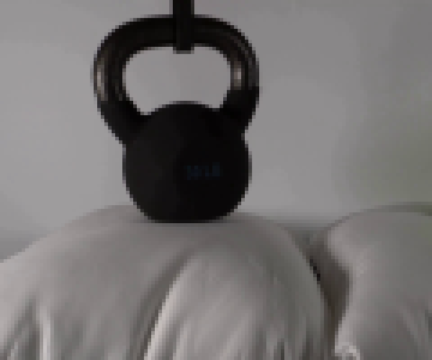
视觉工具实际返回图片 3
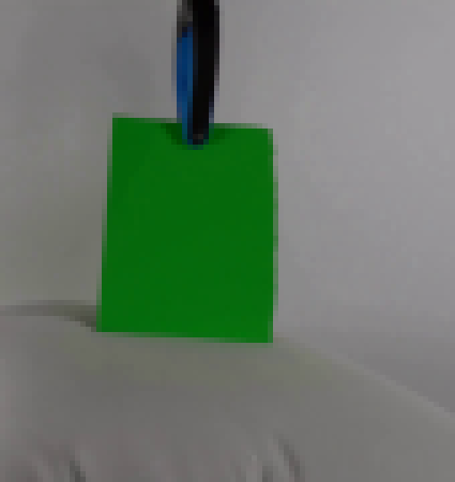
视觉工具实际返回图片 4
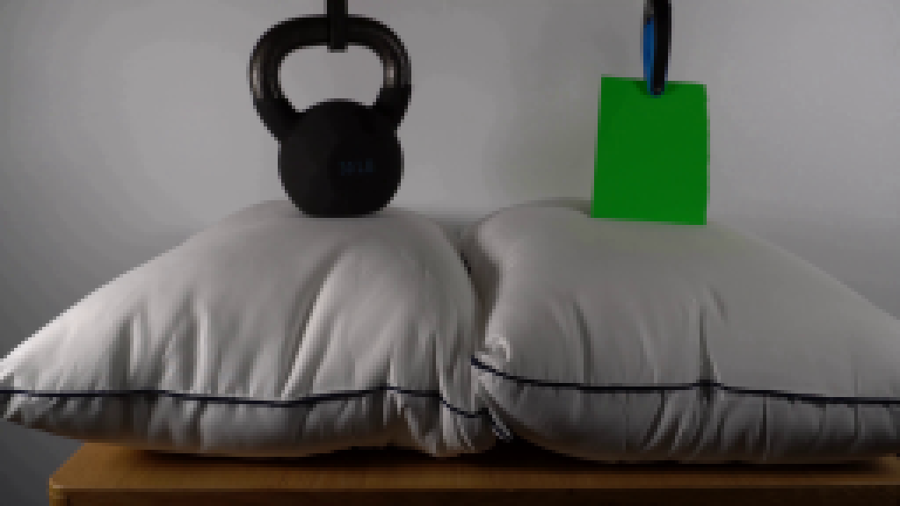
视觉工具实际返回图片 5
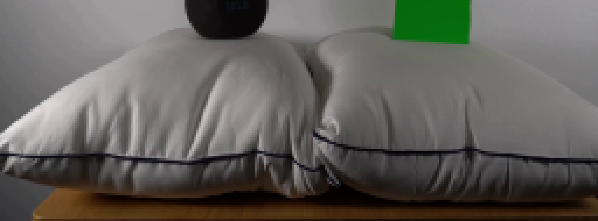
视觉工具实际返回图片 6
视觉工具实际返回图片 7
视觉工具实际返回图片 8
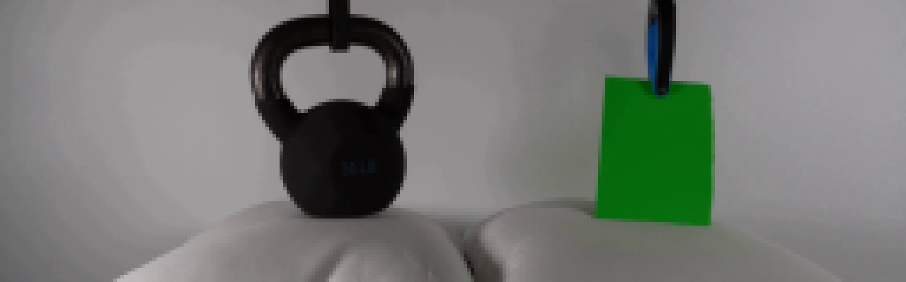
视觉工具实际返回图片 9
视觉工具实际返回图片 10

视觉工具实际返回图片 11
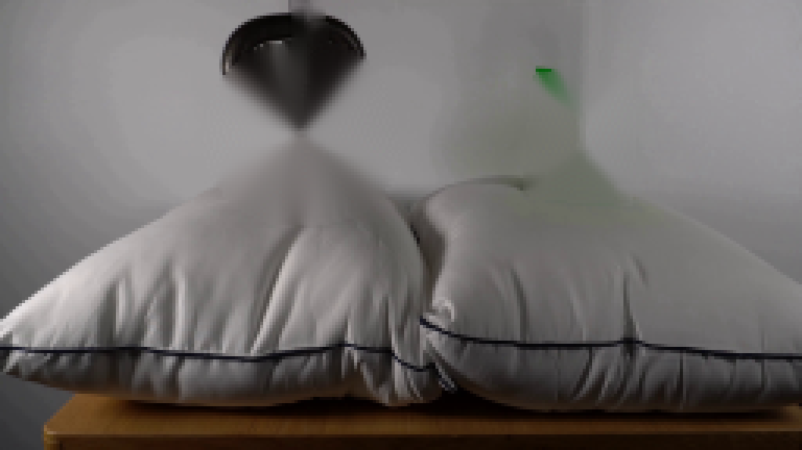
视觉工具实际返回图片 12
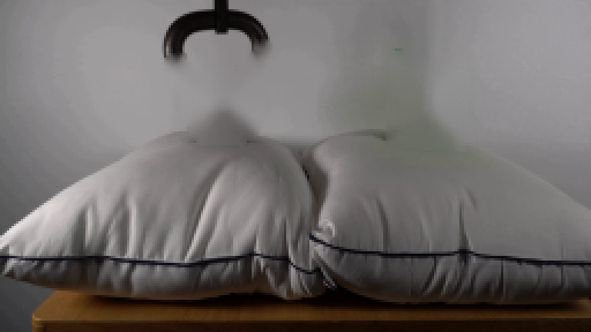
视觉工具实际返回图片 13
视觉工具实际返回图片 14
视觉工具实际返回图片 15
视觉工具实际返回图片 16
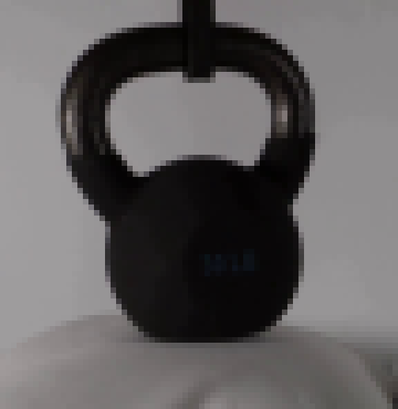
视觉工具实际返回图片 17
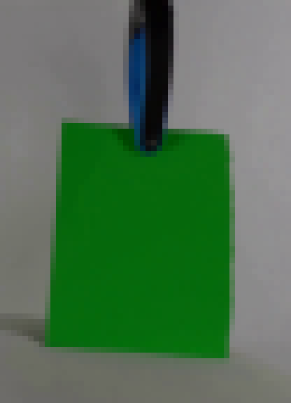
视觉工具实际返回图片 18
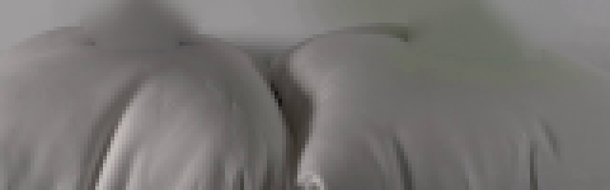
视觉工具实际返回图片 19
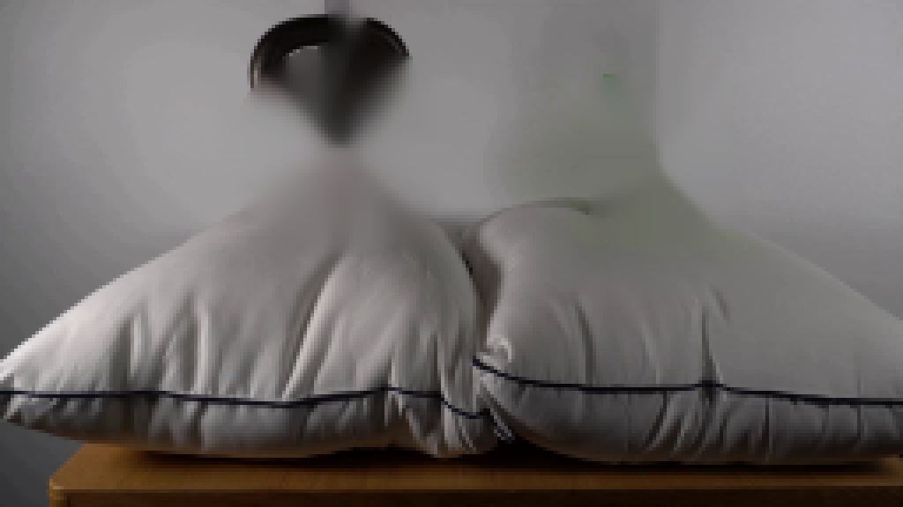
视觉工具实际返回图片 20
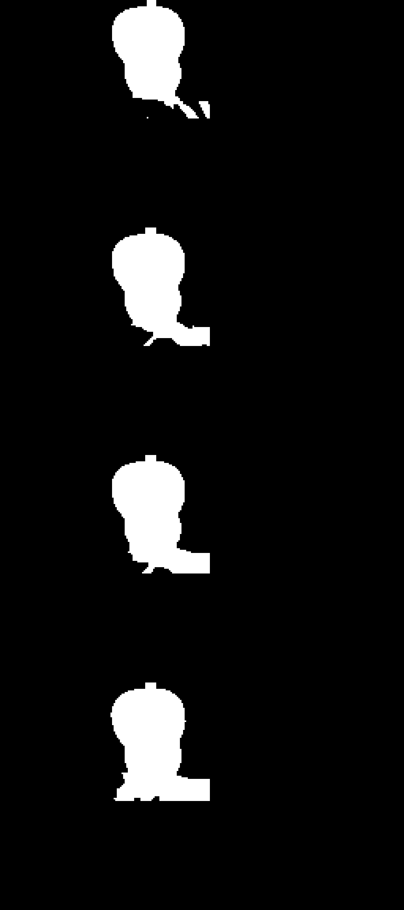
视觉工具实际返回图片 21
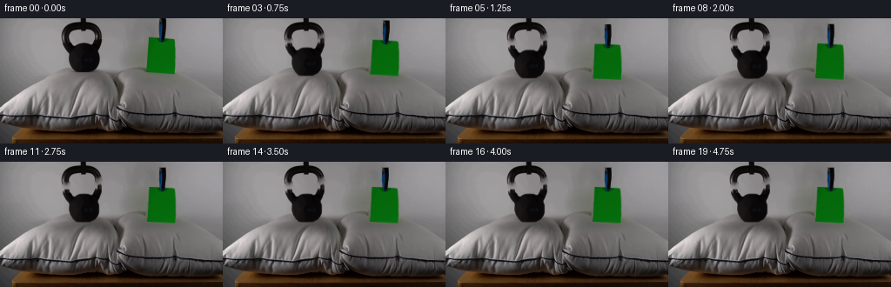
视觉工具实际返回图片 22
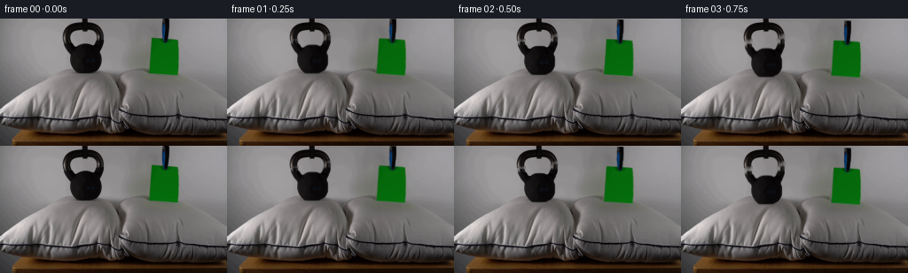
视觉工具实际返回图片 23
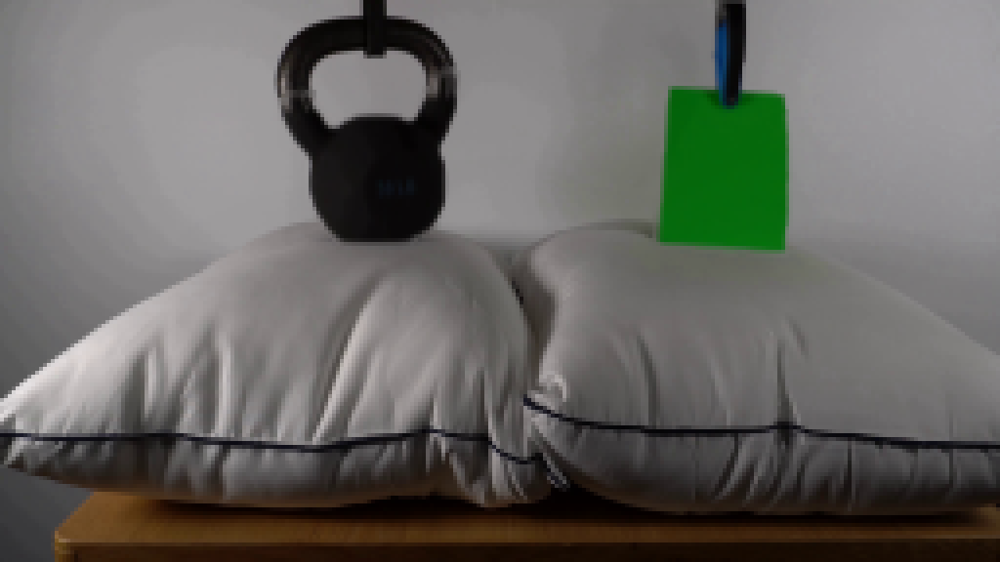
视觉工具实际返回图片 24
视觉工具实际返回图片 25
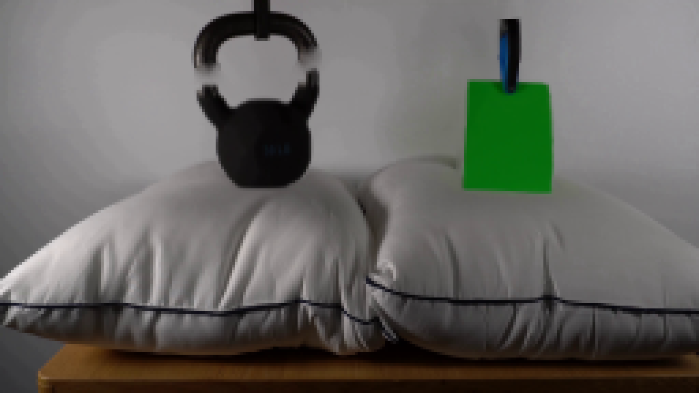
视觉工具实际返回图片 26
视觉工具实际返回图片 27
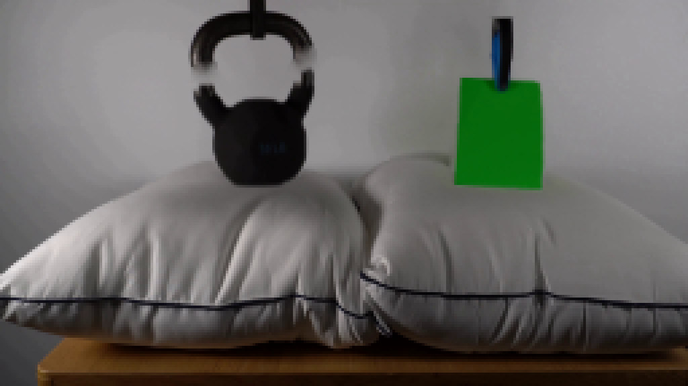
视觉工具实际返回图片 28

视觉工具实际返回图片 29
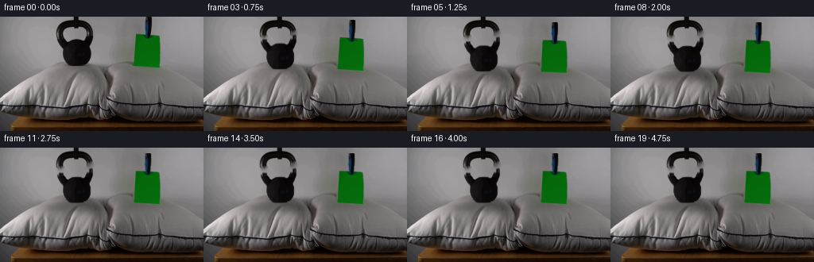
视觉工具实际返回图片 30
视觉工具实际返回图片 31
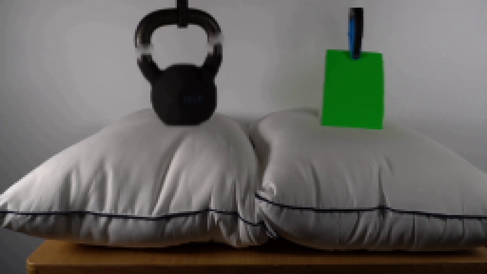
视觉工具实际返回图片 32
视觉工具实际返回图片 33
保存候选 2 份；完成命令 36 次；可验证图片返回 33 张。原始 API 响应与完整日志保留在本地。